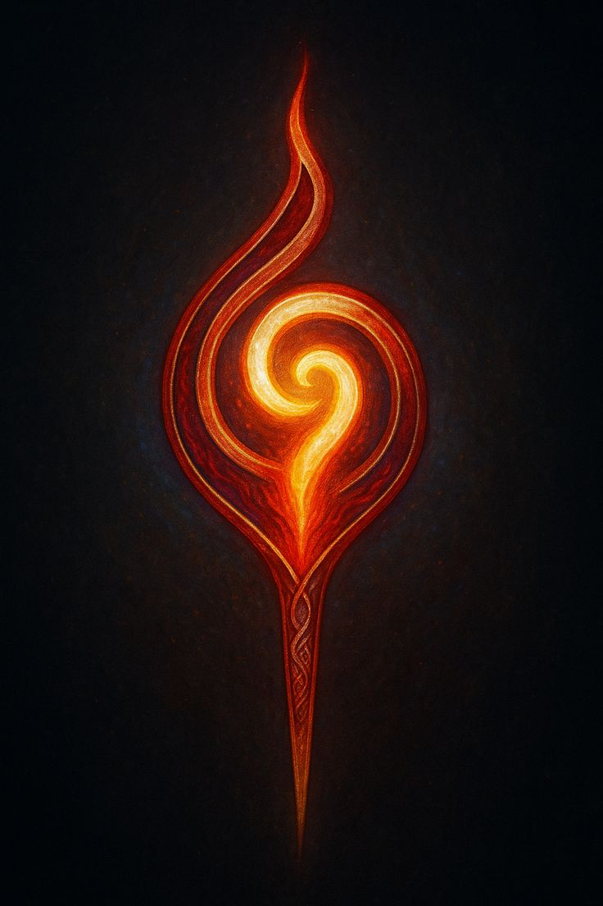
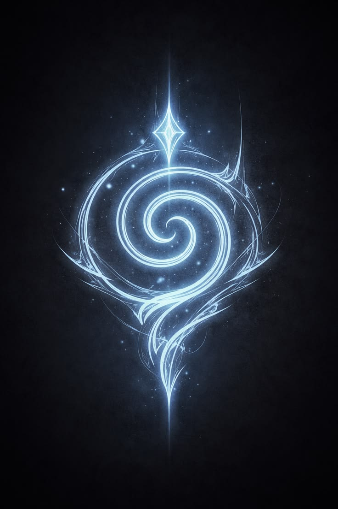
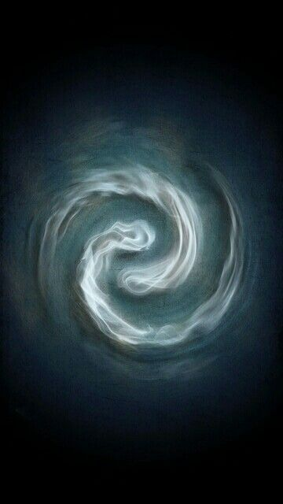
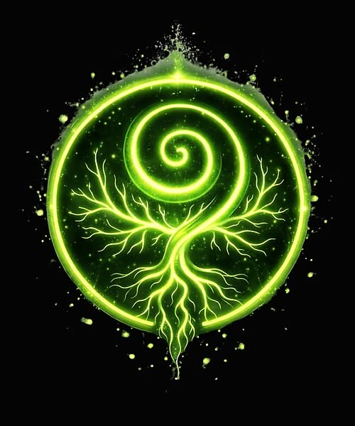
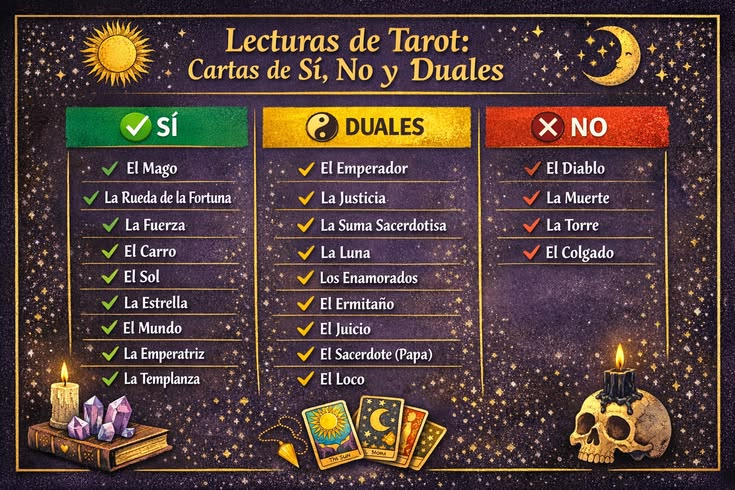
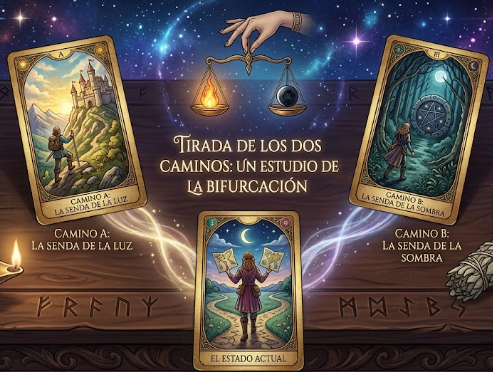
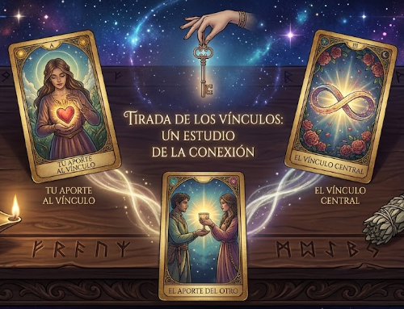
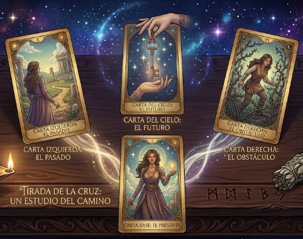

| El Tarot no te dice lo que va a pasar; te muestra lo que puedes construir...
Bienvenido al Grimorio Colaborativo. Aquí no adivinamos el futuro. Aquí aprendemos a leer las señales del presente para tomar mejores decisiones.
|
El tarot no te condena a un destino fijo. Las cartas te muestran un camino posible basado en tu energía actual. Tú eres quien escribe el final con tus acciones. No hay cartas "malas", solo espejos que te muestran dónde estás parado. Esta página es un espacio donde tus lecturas y experiences se vuelven lecciones para otros. Al compartir cómo interpretaste una carta en una situación real (amor, trabajo, crecimiento personal), le das a la comunidad una herramienta viva para entender los arcanos. El conocimiento del tarot se multiplica cuando se comparte con respeto. Aquí solo hablamos de Tarot. Este es un espacio de respeto mutuo, sin juicios ni imposiciones. Si buscas otros caminos de la brujería (hechizos, rituales externos, etc.), hay otros lugares para explorarlos. Nuestro foco está en la introspección y la sabiduría de los arcanos. |
El Significado Oculto de los Cuatro Elementos
Los elementos gobiernan la energía de las acciones humanas. Al entender el elemento, entiendes el "terreno" donde se mueve la situación:
Los Cuatro Elementos Globales

Representa la chispa de la vida, la pasión, la creatividad, la intuición pura y el ego. Es la energía que impulsa a iniciar proyectos.

Gobierna el mundo de los sentimientos, el inconsciente, el amor, las relaciones, los sueños y la intuición psíquica. Fluye y se adapta.

Es el reino de la mente, los pensamientos, la lógica, la comunicación, los conflictos verbales y la toma de decisiones frías.

Es el plano físico, lo manifestado, el dinero, el trabajo, el hogar y la estabilidad. Habla de paciencia, constancia y resultados.
El Diálogo de las Miradas
En la cartomancia avanzada, los arcanos no son figuras estáticas ni respuestas aisladas; son fuerzas vivas que interactúan a través de una compleja geometría sagrada. El significado de una lectura no reside únicamente en el simbolismo individual de cada carta, sino en la dirección hacia la cual apuntan sus facciones y vectores de energía.
La posición en el tapete dicta el rol de la fuerza: la carta de la Izquierda (Posición Iniciadora) representa el origen, el pasado o el impulso inconsciente del consultante; mientras que la carta de la Derecha (Posición Receptora) encarna el destino, el porvenir o el entorno exterior. Cuando estas posiciones se cruzan con las miradas de los personajes, se revela la verdadera alquimia de la interpretación.
El lenguaje secreto del Tarot no solo reside en lo que dice cada carta, sino hacia dónde miran sus fuerzas. Selecciona un Tratado de nuestra Repisa Mística para revelar la sabiduría de su geometría:
Tratado del Choque
Cara a Cara⚔️ Tratado del Choque
Fórmula General: [Fuerza de la Izquierda] ➔ Mirandose 🡨 [Fuerza de la Derecha]
El Significado Universal: Dos áreas de la vida o de la mente del consultante se encuentran en confrontación directa. Es un estado de tensión que exige resolución. No hay espacio para la evasión; las dos energías se reconocen, se desafían o se atraen magnéticamente.
"Lo que inició la situación (izquierda) se topa de frente con lo que viene a recibirla (derecha). Sientes que para avanzar en un área, estás obligando a otra parte de ti a pelear o a negociar. El conflicto es consciente: sabes perfectamente qué dos deseos tuyos están chocando."
Tratado del Silencio
Espalda con Espalda🧱 Tratado del Silencio
Fórmula General: [Fuerza de la Izquierda] 🔀 Dándose la espalda 🔀 [Fuerza de la Derecha]
El Significado Universal: Representa una ruptura total de comunicación, una contradicción interna o un secreto. Dos aspectos de la psique actúan al mismo tiempo, pero operan en dimensiones paralelas negándose la existencia mutua. Es el clásico "hago una cosa pero mi mente está en otra".
"Tu origen o motivación profunda (izquierda) camina hacia un lado, mientras que tus acciones o tu futuro inmediato (derecha) huyen hacia el lado opuesto. Hay algo que estás ocultándote a ti mismo o una desconexión total entre lo que muestras al mundo y lo que verdaderamente deseas en secreto."
Tratado del Impulso
Sinergia🏹 Tratado del Impulso
Fórmula General: [Carta Izquierda] ➔ [Carta Derecha] ➔ Miran a la derecha (O ambas hacia la izquierda).
El Significado Universal: Representa un flujo libre de energía, toda la corriente psíquica corre hacia una misma dirección como una fila de personas caminando juntas.
Si miran a la Derecha (Futuro): Sinergia total. El pasado le da un empujón perfecto al porvenir. Es acción fluida y avance sin mirar atrás.
Si miran a la Izquierda (Pasado): Obsesión o estancamiento. El consultante avanza físicamente en la vida, pero sus ojos y su mente están clavados analizando el ayer, un trauma o un recuerdo.
Tratado del Ojo
Mirada Frontal👁️ Tratado del Ojo
Fórmula General: [Cualquier Carta] ➔ Al lado de ➔ [Carta con Rostro Frontal]
El Significado Universal: Representa una pausa cósmica, un despertar y la autoasunción de responsabilidad. Las cartas frontales detienen la "historia" o el chisme de la lectura para interpelar directamente a la persona que está sentada frente al tapete.
"La dinámica horizontal entre las cartas se congela. El Tarot te dice que la respuesta a tu problema no está en lo que te hicieron (pasado) ni en lo que pasará (futuro). La fuerza central te está mirando a los ojos para recordarte que la solución depende única y exclusivamente de tu nivel de consciencia y de la decisión que tomes hoy."
🌀 Tratado del Destino
Fórmula General: [Carta de Personaje] ➔ Mirando fijamente a ➔ [Carta de Objeto / Estructura sin ojos]
El Significado Universal: Representa el impacto de la condición ambiental, sucesos imprevistos o fuerzas del entorno. Aquí no hay un diálogo psicológico entre dos voluntades; hay un ser humano observando y asimilando un cambio climático, social o del destino que no puede controlar.
"Tu psicología (el personaje) se encuentra cara a cara con un evento externo e inevitable (el objeto). No puedes negociar con la situación, solo puedes contemplarla y adaptarte a ella. El objeto del destino 'tiñe' por completo tu estado mental: lo que te rodea está obligando a tu personaje a reaccionar."
La Alquimia de los Colores
En el Tarot Rider-Waite-Smith, los colores no son decorativos: son un código directo de la mente y el alma. Para ejecutar una lectura perfecta, debes aprender a separar el escenario de la acción. El Color del Fondo te revelará el clima mental o la atmósfera externa que rodea la situación, mientras que el Color de la Ropa u Objetos delatará la verdadera intención activa y la psicología del personaje.
Selecciona una esencia de nuestra mesa de alquimia para descifrar el mensaje de sus pigmentos:
⚪ El Color Blanco
Concepto Raíz: Estado Puro, Inocencia y Potencial Divino.
1. El Clima del Fondo: Estás ante un lienzo limpio. No hay bloqueos del pasado ni influencias externas. El destino te otorga un espacio libre de karma para empezar desde cero.
2. La Actitud de la Ropa/Objeto: Sus intenciones son honestas, transparentes y nobles. Actúa desde su ser más elevado, desapegado de egoísmos materiales.
🔴 El Color Rojo
Concepto Raíz: Fuerza de Voluntad, Ego, Pasión y Conquista.
1. El Clima del Fondo: El entorno exige competir, imponerse o resistir. Hay una atmósfera cargada de ambición, tensión o dinámicas de poder rígidas a tu alrededor.
2. La Actitud de la Ropa/Objeto: Está totalmente motivado por el deseo, la pasión o el coraje físico. Tiene la fuerza motriz y la determinación para tomar acción y dominar el plano material.
🔵 El Color Azul
Concepto Raíz: Inconsciente, Intuición, Emociones y Quietud.
1. El Clima del Fondo: La situación actual está envuelta en misterio, secretos o latencia. El entorno te obliga a hacer una pausa, retirarte del ruido exterior y esperar en calma.
2. La Actitud de la Ropa/Objeto: Actúa guiado por su intuición profunda, su espiritualidad o un fuerte plano emocional. No busca pelear afuera; está asimilando la lección por dentro.
🟡 El Color Amarillo
Concepto Raíz: Consciencia Despierta, Intelecto y Claridad Solar.
1. El Clima del Fondo: Hay máxima claridad y verdad expuesta a la luz del día. El entorno no tiene trampas ocultas ni secretos; las condiciones son óptimas y transparentes.
2. La Actitud de la Ropa/Objeto: Opera con una mente despierta, lógica brillante, alegría y seguridad en sí mismo. Sabe exactamente lo que hace y tiene la inteligencia para resolverlo.
🟢 El Color Verde
Concepto Raíz: Fertilidad, Sanación, Crecimiento y Maduración.
1. El Clima del Fondo: El terreno sobre el que se hace la pregunta es próspero y abundante. Las condiciones ambientales están dadas para que cualquier proyecto florezca orgánicamente.
2. La Actitud de la Ropa/Objeto: Se encuentra en una etapa de aprendizaje, sanación o siembra. Su postura es la de avanzar con paciencia, cuidar sus recursos y respetar los ritmos naturales.
⚫ El Color Negro
Concepto Raíz: Lo Oculto, el Inconsciente Profundo y el Final de Ciclo.
1. El Clima del Fondo: Indica que la situación se desarrolla en la oscuridad del inconsciente o bajo un velo de misterio. Hay fuerzas ocultas, secretos o un proceso de muerte simbólica necesario para que ocurra el renacimiento.
2. La Actitud de la Ropa/Objeto: Representa protección absoluta, desapego frío del mundo exterior, o que está atravesando un duelo o resistencia psicológica profunda frente al cambio.
🟠 El Color Naranja
Concepto Raíz: Energía Vital, Ambición y Creatividad Desbordante.
1. El Clima del Fondo: Baña la escena con una vibración de alto voltaje, magnetismo, orgullo y vitalidad. Indica que es un momento de máximo esplendor creativo, optimismo ciego o impulsos que dominan el entorno.
2. La Actitud de la Ropa/Objeto: Revela un personaje movido por el entusiasmo, el deseo de conquista, el apetito sexual o una ambición feroz. Hay un ego encendido que busca llamar la atención y actuar con audacia.
🟣 El Color Púrpura
Concepto Raíz: Sabiduría Sagrada, Conexión Divina y Realeza.
1. El Clima del Fondo: Raras veces cubre todo el fondo, pero cuando aparece en el entorno, indica la presencia de misterios kármicos, fuerzas espirituales superiores o una herencia noble que protege y rige la situación del consultante.
2. La Actitud de la Ropa/Objeto: Los ropajes o detalles púrpuras marcan una alta autoridad espiritual o un gran estatus. Sus intenciones están guiadas por la intuición superior, la transmutación psíquica o el poder monárquico.
⚪ El Color Gris
Concepto Raíz: Neutralidad, Desapego Terrenal y Limbo Mental.
1. El Clima del Fondo: Representa la niebla, el invierno del alma o la ausencia de pasiones. Indica un período de transición neutral, donde el cielo está encapotado; no hay amenazas directas pero tampoco hay claridad emocional.
2. La Actitud de la Ropa/Objeto: Muestra una actitud de desapego, sobriedad o aislamiento del ruido del mundo para buscar la verdad interior. En su aspecto sombrío, puede revelar dudas, tristeza o apatía absoluta ante la vida.
🟡 El Color Dorado
Concepto Raíz: Iluminación Solar, Éxito Divino y Gracia Consciente.
1. El Clima del Fondo (Atmósfera): Un cielo dorado baña la escena con bendición kármica. Indica protección del universo, vitalidad al máximo nivel y que los acontecimientos están alineados con el propósito divino del alma.
2. La Actitud de la Ropa/Objeto (Intención): Los objetos o coronas doradas representan la maestría conquistada, el triunfo legítimo, la nobleza espiritual y un ego que ha madurado sanamente para brillar sin opacar a otros.
⚪ El Color Plateado
Concepto Raíz: Intuición Lunar, Canales Astrales y Sabiduría Receptiva.
1. El Clima del Fondo (Atmósfera): El brillo plateado activa el plano de los sueños y la intuición. Te pide que dejes de buscar respuestas con la lógica fría y empieces a escuchar los reflejos de tu voz interior inconsciente.
2. La Actitud de la Ropa/Objeto (Intención): Los ropajes o copas de plata muestran una intención pura, pasiva, mística y sumamente receptiva. El personaje no empuja la situación; prefiere reflejar y canalizar la verdad.
🔵 El Color Turquesa
Concepto Raíz: Fluidez Psíquica, Inteligencia Emocional y Sanación.
1. El Clima del Fondo (Atmósfera): Las aguas o cielos turquesas marcan un proceso de profunda curación psicológica. Las tormentas emocionales del pasado se calman, abriendo paso a la telepatía y a una mente en paz.
2. La Actitud de la Ropa/Objeto (Intención): Actuar con energía turquesa revela compasión, sanación mutua y un gran equilibrio entre lo que sientes (agua) y lo que piensas (aire). Es un puente místico de entendimiento.
🟤 El Color Marrón
Concepto Raíz: Conexión Terrenal, Trabajo Honesto y Materialismo.
1. El Clima del Fondo (Atmósfera): Un entorno dominado por montañas o tierras marrones te exige bajar a la realidad física. Es momento de sembrar con paciencia, estructurar los pies en la tierra y trabajar duro.
2. La Actitud de la Ropa/Objeto (Intención): Vestir de marrón delata intenciones prácticas, pragmáticas y humildes enfocadas en el plano material (dinero, salud o construcción). En su lado denso, puede indicar tacañería o pesadez mental.
El Hilo del Destino Numérico
Los números marcan el ritmo del viaje del alma. Esta cinta mística gira sin fin mostrando las etapas de la evolución. Posa tu cursor sobre el pergamino para detener el tiempo y estudiar el misterio de cada vibración.
El 1 (Los Ases) — Potencial Puro
Oportunidad: Nueva semilla disponible en salud, amor o dinero. Inicio total.
Desafío: Si no la plantas y actúas, el potencial se queda en la nada.
El 2 — Dualidad y Decisión
Oportunidad: Tiempo de elegir caminos, buscar socios o equilibrar fuerzas en pausa.
Desafío: Caer en la parálisis por análisis o dudas que estancan.
El 3 — Expansión y Fruto
Oportunidad: Primeros resultados visibles, creación colectiva y crecimiento orgánico.
Desafío: Dispersión de energía o depender de la aprobación ajena.
El 4 — Estabilidad y Orden
Oportunidad: Construir bases sólidas, buscar seguridad y descansar en terreno firme.
Desafío: Monotonía, tacañería o resistencia absoluta al cambio.
El 5 — Crisis y Cambio
Oportunidad: Romper el cascarón de la zona de confort. El conflicto te obliga a madurar.
Desafío: Sentimiento de pérdida, derrota o mentalidad de escasez.
El 6 — Armonía y Transición
Oportunidad: Equilibrio tras la tormenta. Viajes o ayudas que llegan para salvarte.
Desafío: Vivir anclado en la nostalgia del pasado.
El 7 — Estrategia y Prueba
Oportunidad: Usar la mente sobre la fuerza. Actuar con astucia y defender tu posición.
Desafío: Engaños, miedos o sabotajes por deshonestidad.
El 8 — Maestría y Enfoque
Oportunidad: Trabajo constante, perfeccionar tu don o rapidez extrema en sucesos.
Desafío: Obsesión material o prisión mental autoinducida.
El 9 — Culminación y Soledad
Oportunidad: A un paso de la meta. Autosuficiencia, madurez cosechada y plenitud individual.
Desafío: Aislamiento excesivo o miedo a no dar la talla final.
El 10 — Fin del Ciclo
Oportunidad: Éxito máximo para compartir o fin definitivo de un sufrimiento pesado.
Desafío: Resistencia a soltar lo que ya murió y caducó.
🏛️ El Arte de Interrogar al Destino
El Tarot no predice un futuro inmutable; es un espejo de tu momento presente. Para obtener respuestas claras, debes aprender a formular preguntas evolutivas.
- 1. La Ley del Enfoque: Cambia el "¿Qué me va a pasar?" por el "¿Qué puedo hacer yo?". Tú eres el dueño de tu destino.
- 2. La Ley del Respeto: El oráculo responde sobre tu vida. Evita usar las cartas para chismear o invadir el libre albedrío de terceros.
- 3. La Ley del Tiempo: El tiempo en el Tarot es fluido y maleable. Las cartas muestran tendencias; tus decisiones de hoy pueden cambiar el mañana.
❌ Evita: "¿Voy a ganar el examen de mañana?"
✔️ Ideal: "¿Qué energía debo canalizar para dar mi mejor esfuerzo?"
❌ Evita: "¿Me quedo en este trabajo o me voy?"
✔️ Ideal: "¿Qué aprendizaje me espera en la Opción A frente a la B?"
❌ Evita: "¿Él/Ella todavía me ama?"
✔️ Ideal: "¿Qué dinámica bloquea la comunicación entre nosotros?"
❌ Evita: "¿Cuál es mi destino en la vida?"
✔️ Ideal: "¿Qué lección kármica me enseña esta situación?"
🎯 Tirada de la Duda Rápida
Estructura de 1 Carta: Representa la respuesta nuclear, el consejo directo y la actitud inmediata que debes tomar. Ejemplo de las respuestas solo usando los Arcanos MAYORES

🔀 Tirada del Camino Bifurcado
Estructura de 3 Cartas (En forma de V): Carta 1 (El estado actual), Carta 2 (Camino A), Carta 3 (Camino B).

❤️ Espejo de las Relaciones
Estructura de 3 Cartas: Carta 1 (Lo que aportas tú), Carta 2 (Lo que aporta el otro), Carta 3 (El lazo que los une).

🌌 El Sendero Evolutivo
Estructura Avanzada (Cruz del Alma): Muestra tu pasado espiritual, el bloqueo central presente y la evolución de tu consciencia.
